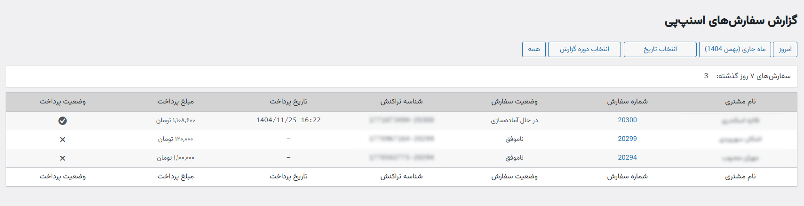
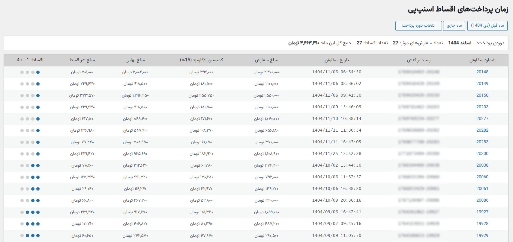

🛠 پیشنیازهای الزامی جهت فـعالسازی
- افـزونه ووکامرس حتما نصب و فعال باشد.
- نسخهی رسمی افـزونه درگاه پرداخت اسنپپی نصب و فعال باشد.
- حداقل نسخهی وردپرس: 5.9 به بالا
- حداقل نسخهی ووکامرس: 7.0
- حداقل نسخهی PHP: از 7.4 به بالا (8.1/8.2/8.3)
- لازم به ذکر است، این افزونه با آخرین نسخهی موارد ذکر شده کاملا سازگار و بهروز است.
⚑ مــعرفی
افزونه مدیریت پرداختها و اقساط اسنپپی در ووکامرس، یک ابزار تخصصی و حرفهای برای فروشگاههایی است که از درگاه پرداخت اسنپپی در ووکامرس استفاده میکنند.
در اکثر فروشگاهها، بررسی صورتحسابهای دورهای اسنپپی و تطبیق آن با سفارشهای ثبتشده، فرآیندی زمانبر و مستعد خطاست؛ چراکه ارسال صورتحسابها به فروشگاه و عدم اطلاع بهموقع از مبلغ تسویهها و تعداد سفارشهای هر دوره و کمیسیونها میتواند باعث سردرگمی مالی شود.
با این افزونه دیگر نیازی به اکسلهای دستی و محاسبات جداگانه ندارید.
با نصب این افزونه تمام سفارشهایی که از طریق اسنپپی پرداخت شدهاند، در یک جدول دقیق لیست خواهند شد و شما میتوانید:
- وضعیت پرداخت هر سفارش (موفق/ناموفق) را مشاهده کنید
- شماره سفارش، تاریخ پرداخت، شناسه تراکنش و مبلغ پرداختی را بررسی کنید
- کمیسیون/کارمزد را بهصورت خودکار محاسبه کنید
- موعد و مبلغ نهایی اقساط هر سفارش را بهصورت شفاف ببینید
- مجموع مبالغ هر بازه زمانی را مدیریت کنید
ویــژگـیهای کاربردی
🞳
تاریخ شمسی
🞳
تقویم شمسی حرفهای
🞳
فونت فارسی Vazirmatn
🞳
فیلتر تاریخ پیشرفته
🞳
جدول پیشرفته گزارشها
🞳
صفحهبندی جدول گزارشها
🞳
محاسبه اقساط بستانکار هر ماه
🞳
محاسبه خودکار کمیسیون/کارمزد
🞳
لیست اقساط هر دورهی تسویه
ویــژگـیهای فــنی
🟆
محاسبه اقساط بدون ذخیره دیتای اضافی
🟆
بهینه برای محاسبه تعداد بالای سفارشها
🟆
سازگار با HPOS
🟆
کنترل LIMIT و OFFSET
🟆
Admin-Side Only
🟆
Structured OOP Architecture
🟆
Sanitize ورودیها
🟆
بدون ایجاد جدول اضافه
🟆
هیچ چیزی را نه ذخیره و نه تغییر میدهد
🟆
سبک، بهینه و امن
🞜 صفحه گزارش سفارشها 🞜

- ⇽ نمایش دقیق سفارشهای ثبت شده در یک جدول
- نام مشتری
- شماره سفارش (دارای لینک به جزییات سفارش)
- وضعیت سفارش
- شناسه تراکنش
- تاریخ پرداخت
- مبلغ پرداخت
- وضعیت پرداخت
- ⇽ فیلتر تاریخ پیشرفته با کلیدهای میانبر برای دسترسی سریع
- امروز
- ماه جاری
- انتخاب تاریخ
- انتخاب دوره گزارش
- همه سفارشها (صفحهبندی ۲۰ آیتم در هر صفحه)
🞜 صفحه زمان پرداختها 🞜

- ⇽ نمایش دقیق موعد اقساط هر سفارش با محاسبه کمیسیون/کارمزد در یک جدول
- شماره سفارش
- رسید تراکنش
- تاریخ پرداخت سفارش
- مبلغ سفارش
- کمیسیون/کارمزد (٪x)
- مبلغ نهایی
- مبلغ هر قسط
- موعد اقساط (۱-۴)
- ⇽ فیلتر تاریخ پیشرفته با کلیدهای میانبر برای دسترسی سریع
- ماه قبل
- ماه جاری
- انتخاب دورهی پرداخت
- ⇽ دارای نوار اعلان خلاصهی گزارش در بالای جدول
- دورهی پرداخت
- تعداد سفارشهای موثر
- تعداد اقساط
- جمع کل مبلغ بستانکار
- تفکیک مبلغ بستانکار هر ماه در دورهی تسویه انتخابی
🞜 سازگاری افـزونه با مـستندات مـــهم اسنپپی 🞜
SnappPay Woocommerce Gateway Plugin: Version 1.4.1
بروزرسانی با نسخهی ۱.۴.۱ درگاه پرداخت اسنپپی ووکامرس
⇽ مدل بازه پرداخت
- بازه پرداخت ۴ قسط ::: در ۴ قسط مساوی (۲۵% ماه اول، ۲۵% ماه دوم، ۲۵% ماه سوم، ۲۵% ماه چهارم)
- بازه پرداخت ۲ قسط ::: در ۲ قسط مساوی (۵۰% ماه اول، ۵۰% ماه دوم)
- بازه پرداخت دو ماهه ::: در ۱ قسط دریافت بعد از ۲ ماه (۱۰۰% بعد از دو ماه)
- بازه پرداخت ماهانه ::: در ۱ قسط دریافت به صورت ماهانه (۱۰۰% ماهانه)
-
اگر قرارداد فروشگاه شما با اسنپپی شامل هر یک از مواردی است که با ✖ مشخص شده، توصیه میکنیم در صفحه زمان پرداختها محاسبات مربوط به جمع کل بستانکار بازهی انتخابی را نادیده بگیرید.
در حال حاضر این افزونه فقط با مدل بازه پرداخت ۴ماهه همخوانی دارد. چون پارامتری برای تشخیص مدل پرداخت سفارشها از سمت اسنپپی ارسال نمیشود. امیدواریم در آپدیتهای آینده به این مورد رسیدگی شود.
پشتیبانی و بروزرسانی
- فقط نسخهی پرمیوم شامل پشتیبانی میشود.
- برای تهیه نسخهی پـرمیوم افـزونه به وبسایت ژاکت مراجعه کنید. این نسخه فقط در ژاکت ارائه میشود.
- با خرید از ژاکت، آپدیتهای بعدی و پشتیبانی طبق قوانین ژاکت در اختیار شما قرار میگیرد.
نکات مهم
- بعضی از فایلهای افزونه با ionCube کدگذاری شده که برای اجرا نیاز به فعال بودن Ioncube Loader در هاست است.
لازم به توضیح است که تمام سرورهای استاندارد، این قابلیتها را دارا هستند. برای نصب و فعالسازی این گزینه، به سرویس پشتیبانی هاست خود تیکت بزنید.
- این افزونه همگام با مــستندات آخرین نـسخهی رسمی درگاه پرداخت اسنپپی ساخته شده و بـــــــروزرسانی میشود.